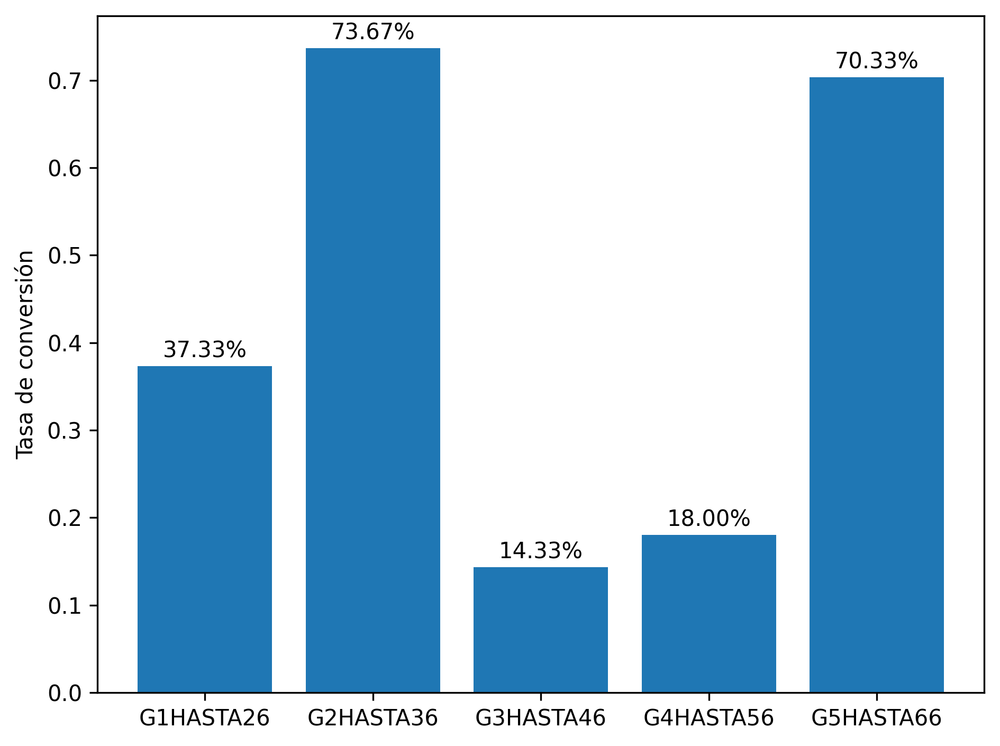

Estadístico: chi-cuadrado = 388.1286
Valor p: p = 0.0
Conclusión: Hay diferencia significativa
Este análisis automatizado utilizó un chi-cuadrado para evaluar tasas de conversión entre variantes. Se obtuvo un estadístico de prueba de 388.1286 y un valor p de 0.0. Los resultados sugieren una diferencia estadísticamente significativa (p < 0.05) entre grupos. Es importante considerar el tamaño muestral y la calidad de los datos al interpretar los resultados.
El test chi-cuadrado compara conversiones entre tres o más grupos. Ayuda a detectar si alguna variante destaca significativamente.
El gráfico de barras compara la tasa de conversión entre las variantes: G1HASTA26, G2HASTA36, G3HASTA46, G4HASTA56, G5HASTA66. La diferencia observada es de aproximadamente 59.33%. Esta diferencia visual es consistente con el resultado estadístico, indicando significancia.
